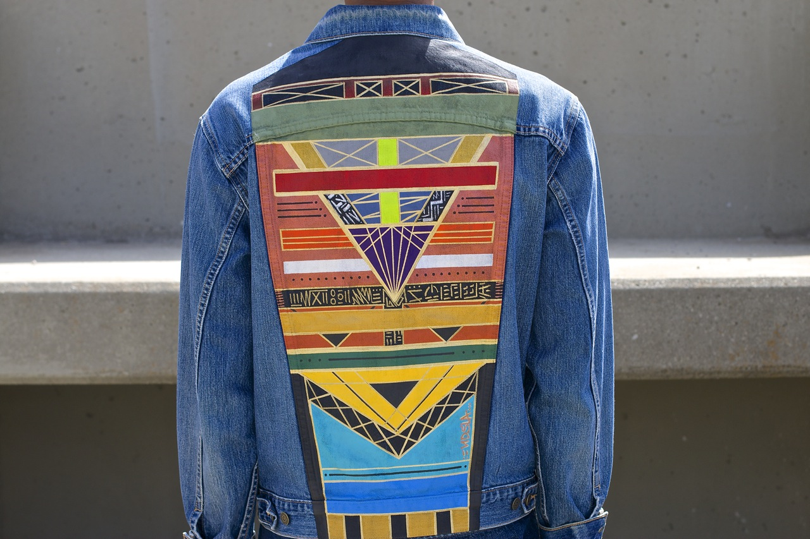

NDSLA
When it comes to creativity, for Rob Hill and Slim Jeff it’s a family affair. The cousins, based out of Los Angeles, combined their love for art, music and fashion and launched NDSLA, which to them translates to this idea of independent stars embarking on a journey of growth. Both of those concepts reign true, for they have experienced a lot of buzz and accolades for their work since the brand launched two years ago. The designs definitely have California vibes, like colorful rays bursting from the seams.
Rob Hill is the mastermind behind the paintbrush, and Slim Jeff offers his creative direction to building the brand and cultivating his skills on the mic through his music. Heavily influenced by travel, cultural patterns, and meticulous symmetry, the shapes that adorn everything from jackets to pants and shoes are eye catching and look like urban royalty - a modern day Egyptian pyramid. The vibrant and geometrical designs Hill paints onto vintage wears breathes a whole new life into them, turning them into one of a kind designer duds.
amfm: The garments that you make are works of art with the clothing as the canvas. How and why did you decide to marry art and fashion together? Why did you feel clothing was a optimal medium to showcase your work over traditional canvas?
NDSLA: I used to experiment with art and fashion in high school, using paint splatter and spray paint techniques to alter the look of basic textiles, mostly denim and cotton. I was inspired by a brand called Miskeen, which was big around LA during the time. I created success for myself at an early age selling my artwork on clothing, but I didn't think of myself as a serious artist. My cousin Slim Jeff was heavy into the Los Angeles arts scene when I moved back to LA from New York about three years ago. He encouraged me to take up painting using actual paint brushes. He and I developed this concept of art as movement. That's how NDSLA was born. I began to develop my style painting on clothing, but I prefer to paint on traditional canvas. [Rob Hill]
amfm: NDSLA is much more than a fashion and art collaboration. It is a collective, including music as well, pop up shops, and a family affair. How did the two of you decide that this was something that you wanted to pursue? It what way have you seen this platform be successful for you?
NDSLA: The decision was easy. Rob nd I knew we wanted to build something together using our unique talents. We decided to join forces and create a family business. We knew the combination of art and music as one moving vehicle would be a unique concept and we ran with it. We've seen success in the form of magazine publications, TV spots, and contractual work. Rob and I feel that we have a long way to go to reach our goals though. Our company is hardly two years old. We've had a few moments of public recognition, but it all feels like another day at the office when you're in the moment. Years from now I think we'll appreciate our accolades more, but as for now they're all opportunities to get our brand out there. We're still working, planning, and getting ready for 2016.
[Slim Jeff]
amfm: Rob you spent eight years in the military and your method is said to be highly influenced by that, how so? Were you making art prior to the military, during your time spent or was it something you got into after?
NDSLA: I did spend eight years in the military, serving in the U.S. Coast Guard. The precision in my art is highly influenced by my time spent in the military. The meticulous process of creating the line work can be attributed to military culture. It's an aspect of my life that impacts my habits and who I am as a man. I didn't create any art during my military stint. I actually went on an eight year hiatus and didn't get involved in fine art until after my years of service were complete.
[Rob Hill]
amfm: You also had a health scare, and it put your dreams into perspective so to speak and caused to to take the plunge and do what you love to do. Why do you think fear is something that both motivates and deters artists from their dreams? How did you overcome that?
NDSLA: I underwent stomach surgery a few years ago. During my recovery Slim would visit me daily in the hospital and we hashed out the plans for what was to become NDSLA. I was never fearful of attacking my dreams. I have a strong work ethic and truly believe I can achieve what I put my mind to. I would advise other artists to get lost in their passion. Passion trumps fear. Everyday I figure out how to make a way for myself. [Rob Hill]
amfm: Your mantra is "sui generis" meaning " of it's own kind," is each piece one of a kind customly created? You said they are tailored to match all individuals. What does the design process look like for you and how has this exclusivity helped stylize your brand?
NDSLA: Our mantra is "sui generis." We like to operate on a piece-by-piece basis. Each client has different ideas. We strive to create a collaborative design process between us and them. Items can range from clothing to housewares to furniture. We like to push the envelope and keep challenging ourselves to create unique items. We are big on upcycling. Giving old and forgotten items a new life is a great feeling. Someone may want us to customize an item that has value to them specifically. That item may be connected to certain memories in their life. NDSLA likes to enhance that feeling. [Slim Jeff]
amfm: What about travel and civilization inspires your designs? How does the abstract nature of your art aesthetic lend itself to a global influence and landscape?
NDSLA: I've been around the world during my time in the Coast Guard. I was able to experience the artistic elements of different cultures around the world. Simple things like color patterns, shapes, and lines are different around the globe. I also like to study the art forms of ancient civilizations. All of it has meaning. All of it can be applied to the present. I'm honoring all of those artists who came before me. They may not have the recognition of Eurocentric artists like Van Gogh or Picasso, but their contributions still influence me daily. I'm really into ancient Egyptian art and Native American art. I take bits and pieces of inspiration from their cultures. [Rob Hill]
amfm: What is your dynamic like? How do you inspire and influence one another with Slim's music and Rob's art? Do you ever take a stab at eachother's crafts?
NDSLA: We encourage each other to push the boundaries in our respective fields of art. Rob will offer a new perspective on music, and I will offer a new perspective on art. We're around each other daily. We're also family, and our relationship is honest. We're just cracking the surface as far as talent is concerned. We can grow exponentially. We're also still learning. We honestly want to provide a unique way for people to experience poetry and art. I am more of a poet than a rapper. My prose is thought provoking and so is Rob's art. I doubt I'll ever pick up a paintbrush or Rob pick up a microphone. We're happy expressing ourselves through what we know and love. The main thing is that we support each other as much as possible. [Slim Jeff]
|  |
For more from NDSLA:
NDSLA Website
NDSLA on Facebook
NDSLA on Instagram
photo credits: NDSLA